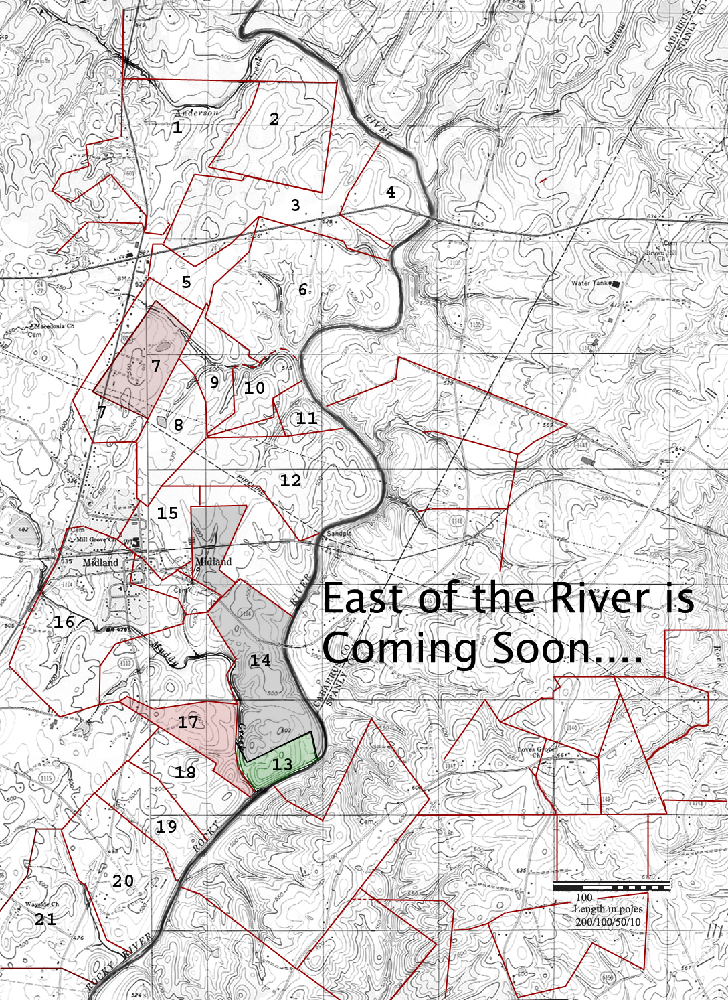

|
Cabarrus County, North Carolina
formed from Mecklenburg in
1792
See Map
of Cabarrus County showing rivers and land owned by various
Longs
1793. Account Ledger for John
Melchior's store. Accounts for Peter Long, James Long,
Senr (which names sons William, George and Peter),
and for James Long Jr (which identifies two apparent slave
names)
1794. Court. Third Monday in January, Ordered that letters
of Administration issue on the estate of Jacob FRANCK, decd.
to John LONG
with Joseph SHINN, Eqr. Security in the sum of £200.[Note:
Jacob
Frank was a German who lived earlier in Rowan. His chain
carrier for a land survey was the wealthy John
Long of Rowan who died bef 1760 and who married Hester ?Cathey]
1794. Court. Third Monday in April, An inventory and Sales
of the Estate of Jacob FRANC, decd. was produced by John LONG,
admr. in the amount of £159.11.9.
21 Oct 1794. Petit Jury: Philip Shive, Jacob Boshard, Henry
Simon, John Long, George Earnhart, Archibald M'Larty,
Robert Davis, James Carrigan, Samuel Harris, Henry Pyler, James
Scott, Jr., Martin Young. Trial: Jacob Mussgenug vs. James Curry.
Verdict for the plaintiff. Assess damages of 38.5.6 pounds.
1794. Court. Third Monday in July, An additional return of
the Estate of Jacob FRANC, decd. amounting to £21.8.9 by
John LONG, admr.
[Approx] 1795 - To the honorable the general assembly of the
state of North Carolina the humble petition of a number of inhabitants
of the county of Cabarrus hubly showeth that whereas an act of
aembly paed 1792 for dividing the county of Mecklenburgh and
has in the Sixth Section of said act appointed a certain number
of men to fix ont he most central place for erecting the public
buildings in said county.....[list of petitioners]
John Long pg 1; (next to Jacob Barnhardt)
separate piece of paper
James Long pg 5; (next to John Long, Watts, Smith,
Garmon, Howell, Freeman, Bonner Bird, etc
John Long
George Long; (5 names down from James and John Long)
1795. Court. Wednesday, July 22, A settlement of the estate
of Jacob FRANCK, decd. by the Admr. John LONG. Amount
in the whole £180.3.0, as per vouchers filed £27.9.9.
Balance in the Adminstr. hands £152.13.3.
1795. Court. Wednesday, October 21, A settlement of the estate
of Jacob FRANC, decd. by John LONG, admr. Amount of sales
£180.3.0. As per vouchers filed £27.9.9. Remains
in the Admrs. hands £152.13.3.
1795 Tuesday April 21 Court - Ordered by the court that William
Long an orphan child be bound to Michael Kline to be taught
the art and mystery of a mason until he attains the age of twenty
one years being now.
1796 Frederick Long plantation adjacent Rowan County line
1796 Names found in Freemason lists and documents: Stokes
No. 32 Concord: John Long
1797 Names found in Freemason lists and documents: Stokes
No. 32 Concord: Joseph Long (who is this? Joseph Long
s/o John Long of Cabarrus was born about this same time. A Joseph
Long m Catherine Phillips in 1793 Rowan and was on 1800 Rowan
census. Some connect this Joseph
Long to David Long rev. soldier b. 1758 Bedford Va. More
Note: John Long of Coldwater Creek in Cabarrus named a son David.)
1798 Peter Long lives adjacent Bonner
Bird, Wm Newell, John Watt on Watery Branch, Canadey's Branch
and Long Branch.
Bonner Bird of Cabarrus to Thomas Ingram of same. 18 Dec 1798
- 50L. Land situate ont he watery branch and on Canadeys Branch
and on the Long Branch joining William Newels lines, Bonner
Birds and Peter Longs and his own and John Wattses lines
containing 115 acres <s> Bonner (his X mark) Bird, Wit:
James Little, George Tucker. Recorded Jan 1799.
1799 Court. July 15, Jacob FRANK dec's. Division of land among
legatees by jury of John DUCK, John LONG, Samuel SHINN,
Sr., Henry FURRER, Joseph SHINN. Report next session. John, Joseph,
Susannah, Margaret - orphans of Jacob FRANK. John RIEDLING, guardian.
Elias HOUSE, sec.
1799 Henry Long ...adjacent to Henry and Peter Simon,
Andrew Crusse on Shaney Wolf Branch
1799 Frederick
Kizer to James Long 50 acres on Rocky River....wit: George
Kizer Sr, George Kizer Jr.(note: Frederick Kiser was uncle to
Eliz Kizer Long, wife of George Long. George Kizer Sr & Jr
was her father and brother)
Frederick Kiser to James Long 5 June 1799
L25. 50 acres lying on the waters of the Rockey River beginning
at [Sin blow below the fifsing] on the bank of the river S80E54
black oak N80E50 black oak N20W20 pine N50 the p line to Joseph
Howels branch thence down the various courses of the branch to
the river then down the various courses to the beginning containing
50 acres. <s> Fred. Kiser. Wit: George Kiser Senior, George
Kiser, Junior. Recorded April 1802.
1800 Cabarrus Census
1800 Gold was discoverd by little Conrad Reed, 12 year old
son of John Reed, Hessian soldier. The website editor believes
the Longs of Burke NC and North Ga may have been involved in
gold mining. They seemed to live in places where gold mining
was very active. Conrad Reed lived next door to George Long in
1810 Cabarrus census. Conrad Reed was 1st cousin to Elizabeth
Kiser who married George Long. George Long was living adjacent
John Reed in
1800 Cabarrus census. See NC state account
of the Reed mine.
1800 Jan 7 Bond Date - Bride: Elezebeth Orsburn, Groom: Henry
Smith, Bond Date: 07 Jan 1800, County: Cabarrus, Record #: 02
181, Bondsman: Peter Long X, Witness: James Little, Bond
#: 000010105
1800 Apr Jurors for next court [Capt.] Blackwalter: Jacob
Misenhimer, John Long, Alexander McLarty
1800 Petition from residents of Cabarrus County living near
Melchior's Mill to the NC legislature requesting matters relating
to fishing around the mill and his dam. [list]
John Long....George Long...Peter Long.
1801 State of NC vs William Long
1801 Sep 22 Bond Date - Bride: Prudy Long, Groom: John
Mathews, County: Cabarrus, Record #: 02 131, Bondsman: Peter
Long X.,Witness: John Simianer, Bond #: 000009153
Query at Genforum: John Matthews b.ca 1780 married to Prudence(Long?)
b.1790 moved to Macon/Jackson Co NC in ca.1820 had daughter Sally
b.1827 in Macon county. Other names that might be sons are: Peter,James,William,Matthews.
John and Prudence are listed on 1850 Macon Co.Cullawhee Twp.
NC census at household 799-814. I need to know anything at all
concerning these two. What were parent's names and full list
of children.They possibly spent some time in Burke Co.NC before
coming to western NC. - Roger Mathis - John Mathews and wife
appear in 1810 Buncombe census both age 26-45 next to Peter and
Anthony Presley.
1802 Jan Court . James Long dec'd last will and testament
proven by George and Mary [Dove] Kizer [father and mother
of Eliz Kizer Long, wife of George Long]. Letter of testamentary
to James Long. [note: "In
1875, a courthouse fire destroyed some records, including most
of the original wills. The surviving original wills were principally
for testators with surnames beginning with the letters H. M,
W, and Y. At a later date, these surviving wills were copied
into Will Book A. Many of the original wills are missing."]
1802 Jan 21 Jurors for next court term [Capt.] Charles Blackwalter:
Charles Blackwalter, Mathias Phifer, John Long
1802 April Court of Pleas and Quarter Sessions: deed recorded
between Frederick Kizer to James Long
1802 April Court. Bill of Sale James Long, dec'd inventory
and sales by James Long... L55.0.0
1802 October Court. Petit Jury List....James Long
1804 Caleb
Wolf to Peter Long 60 acres on Rocky River....adjacent Garmon's
line...wit: James Little, Bonner Bird
1804 Peter
Long to George Kizer the land conveyed to P. Long
by Caleb Wolf West side of Rocky River 60 acres acknowledged
in open court by P. Long ...wit: Samuel McCurdy (note: Peter
Long signed with marke described as the letter P laying on its
side facing down)
1804 Nov 30 - Divorce
Petition by Delila Long, wife of James Long asking
to be allowed to own property in her name. Granted.
1805 Court of Pleas and Quarter Sessions: deed recorded between
Godlieb [Caleb] Wolf to Peter Long
1805 Court of Pleas and Quarter Sessions: deed recorded between
Peter Long to George Kizer
1805 Joseph Yates to John Long 213 acres crossing Muddy
Creek... adj. Widow Shelby...wit: Jonathan Culpeper, Martin Phifer
1806 Jul 17 Cabarrus Co Marriage Bonds - Rosena Long to
George M Misenheimer; Jno H Brandon sec.
1807 (signed 1800) John Shellhouse to John Long 77
acres Little Cold Water Creek...wit: Frederick Frank, John
Long Jr.
1808 John Polk to George Long 100 acres west side of Rocky
River...adj. Henry Cagler...wit: David Pervence, Robert Fraser
[interestingly, Ann Pervine, dau of William Pervine and 1st
cousin of this David Perviance married a George Long. Nothing
more known]
John Polk to Geo Long 4 Apr 1808 - $160. On the W side
of Rockey River and bounded as follows. Begins at a WO on the
bank of the Rivers, Henry Cagles corner and runs then N39W134
pole to a RO then N57W68 pole to a PO then N44E98 pole to a stake
thence S56E142 pole to a PO thence along a hollow 35E12 pole
to a WO then S56E64 pole to a BO on the River bank thence down
the river as it meanders to the beginning containing 100 acres
1808 Henry Kagle of Montgomery County to George Long of
Montgomery County 100 acres West side of Rocky River ...wit:
George Stokes, James Little
Cabarrus County North Carolina
Deed Book 7, Page 131
This indenture made this 16th day of January 1808 between
Henry Kagel of the County of Montgomery on the one part and George
Long of the same County and State of the other part. Witnesseth
that for & in consideration of the sum of 100 pounds lawful
money of the sd (said) state in hand paid the receipt of which
is hereby acknowledged by the sd Kagle hath given granted bargained
sd lots aliened & confirmed same unto the said George Long
his heirs and assigns forever all that Tract piece or parcel
of land situated lying and being in the County of Cabarrus and
on the west side of Rocky River, beginning at a P. O. (Post Oak)
on the river bank and runs N 30 W 48 poles ( North 30 degrees
West, 48 Poles) to a stump near a house thence with Rivers line
N 48 W 166 poles to a stake in sd line thence N 54 E 80 poles
to a P. O. thence S 57 E 60 poles to a Red Oak then S 39 E 134
poles to a Water Oak on the bank of the river thence down the
river as it meanders to the beginning containing by survey one
hundred acres more or less ------- (the usual legal stuff following)----------
Witness whereof the said Henry Kagle hath hereto set his hand
and affixed his seal the day and year first above written .
his
Henry HK Kagle
mark
January Session 1809
Signed sealed and delivered in the presence of:
George Stokes
James Little
1808 Jul 8 Deed Book 7, pp. 206-207 Grantors: Jacob, John
& Joseph Frank the heirs of Jacob Frank deceased of the County
of Cabarrus Grantee: Isaac Blackwalder (of Cabarrus Co.) 147
acres of land in Cabarrus Co. “on a branch of Little Coldwater
Creek on the east side thereof . . . Michael Stoughs corner .
. . Henry Furrs line . . . John Dukes corner . . .Phillip Barnharts
line”. Signed John Frank & Joseph Frank. Witness: John
Long, Senr. Recorded: Jan Session 1810
1809 Mar 27 Cabarrus Co Marriage Bonds - Peter Earnhardt to
Elizabeth Furr; Jno Long sec
1810 Jun 4 Cabarrus Co Marriage Bonds - Peter Earnhardt to
Peggy Barbrick; Jno Long sec.
1810 Cabarrus Census
|
Name
John Long
George Long
James Long
D. Long
|
Males
2 1 1 1 1
- - - 1 -
3 - 1 - 1
|
Females
1 3 - 1 - (3 slaves)
3 - 1 - -
1 3 - 1 -
|
(Where is Peter Long in 1810? He appears in 1814 Buncombe
County deed)
1811 July. Members List of Meadow
Creek Baptist Church (today in Stanly County): James Long,
Delilah Long, Polly Long (wife of Peter Long)
1811 Jan Court: Road. To be laid off. Concord to Salisbury
to join a road at Rowan line on Frederick Long's
plantation. Jury: Martin Blackwelder
1811 Michael Howel and Geo Reed to George Long of Cabarrus
West side of Rocky River ...wit: Henry Howal, Geo Kizer [Michael
and Henry Howell are brother-in laws of John Kizer, brother of
Eliz Kizer Long, wife of George Long]
1812 War of - Muster
Roll for Cabarrus
John Long, 3rd Sergeant
George Long, private
1812 Apr 22 Cabarrus Co Marriage Bond Martha Long to
Matthias Bostian; David Long sec
1813 John Long Sr to Samuel Shinn...Little Cold Water
Creek ...adj Jacob Joiles...wit: John Long Jr, Joseph Long.
1813 Mar 9 Cabarrus Co Marriage Bond - David Long to
Peggy Andrew; Alex Holley sec:
1814 James
Long to Edmond Smith [married Marg. Howell, sister to Henry
and Michael Howell] 50 acres East Bank of Rocky River...wit:
John Kizer [brother-in law to Edmond Smith], Evan Howell [brother-in-law]
James Long to Edmund Smith 28 Dec 1814 - $150. Bounded
as follows: beginning at a line on the east bank of Rocky River
below the fishing shoal thence S80E54 poles to a BO then N80E50
poles to a BO, N20W20 to a pine N50 the sett line to Joseph Howels
branch down the various courses of sd branch to the river thence
down the river the various courses to the beginning containing
50 acres <s> James (his mark) Long. Wit: John Kiser, Evan
Howell. Recorded July 1821.
1815 Nov 15 Cabarrus Co Marriage Bonds - Phereby Long
to Jno McNeely Wallace (Aaron Wallace); Hugh Wallace sec.
1820 Cabarrus Census
|
Names
George Long p 148
|
Males
000001
|
Females
00001 (1 slave)
|
1820 July 25. Western Carolinian (newspaper) Letters remaining
at the post office at Concord, Cabarrus County [list] James
Long
1822 Oct 14 Cabarrus Co Marriage Bonds - John Long
to Margaret Smith; David Storke sec.
1823 Jan 20 Cabarrus Co Marriage Bonds - Henry Long to
Catherine Suther; M. Hunt sec.
1826 Feb 4 Cabarrus Co Marriage Bonds - Henry Long Jr
to Catherine Bost; G. H. Swearingen sec.
6 Feb 1826 Cabarrus NC, Deed 12-345, prv’d Apr 1826.
George Cagle to George Kiser. Being 170 acres. Wit: George
Long, Elizabeth (X) Long.
1828 From email of Eddie Hyland:
"The following article is about Elizabeth Kiser (27 Aug
1771- 27 Apr 1828) who married George Long. There were no children
of Elizabeth Kiser and George Long. They were members
of Meadow Creek Baptist Church in Stanly Co., NC according to
Elaine Walsh research. No other information on George Long. Elizabeth
was daughter of George Alexander Kiser Sr. (11 Mar 1754-11 Mar
1830) and Mary Dove (1756-27 Apr 1836). George Kiser purchased
land from Peter Long Cabarrus Co.Deed Book 5 Pg 191. Elizabeth
was murdered by one of her fathers slaves. The following story
was copied from a newspaper article:
This newspaper item should be May 6, 1828, page 3, col. 3
Shocking Murder - We learn, that on Sunday, the 27th ult.
Mrs. Long, wife of Mr. George Long of Cabarrus county, was killed
by a negro fellow belonging to her father, Mr. George Kiser.
The fellow bore a bad character, and had been forbidden, by Mrs.
Long, to visit her house, which he had been in the habit of doing
clandestinely, for the purpose of seeing a negro girl belonging
to the family. He consequently determined upon revenge; and on
Sunday, about 3 o'clock, while Mrs. Long was passing alone along
the road to her father's, the negro rushed from an ambush where
he had been, lying all day, seized and strangled Mrs. L. with
two handkerchiefs, tying one round her neck and stuffing the
other in her mouth. The fellow was apprehended the same day,
and confessed the murder. The negro girl was also apprehended
as an "accessory before the fact" she having furnished
the fellow with food while he was lying in wait, and being privy
to his designs on Mrs. L.'s life. They were both put in prison,
and will be tried at the superior court which sits this week
in Concord. Source:Western Carolinian RRsw newspaper Tues. 13
May 1828 from 1820-1829 Abstracts NC Raleigh Newspaper Vol. II
page 424 (item 3514)"
Note: the date of this newspaper item is wrong. May 13th was
when the WC published the results of the trial, page 3 col. 3
(near bottom)
1828 North Carolina Criminal Executions
| JOE, (KIZER) |
BLACK |
MALE |
SLAVE |
MURDER |
HANGING |
JUN 20 1828 |
CABARRUS |
| MOLLY, (LONG)
|
BLACK |
FEMALE |
SLAVE |
MURDER |
HANGING |
JUN 20 1828 |
CABARRUS |
| WEIR, JOSEPH |
WHITE |
MALE |
|
AID RUNAWAY SLVE |
HANGING |
JUN 20 1828 |
CABARRUS |
Note: Cabarus County Supeior Court Minutes, Trial of Joseph
Weir page 185 (LDS 101) trial of "Negro Joe""Negro
Moley" page 200 (LDS pg 110) and Order of execution Joseph
Weir ordered hanged, page 194 (LDS pg 107) page 203 (LDS pg 111).
Order of execution: "Negro Joe" page 204 (LDS pg 112),
"Moley a slave" same page.
According to newspaper account in Hillsborough paper citing
a Western Carolinian newspaper story, Joseph Weir appealed his
conviction and execution to the Supreme Court (The Hillsborough
Recorder, Hillsborough, North Carolina, Wednesday May 21st, 1828,
p. 2. )
Note: upon inspection of Superior Ct records, it seems Joseph
Weir was tried for "kidnapping slaves" in the November
1827 court term book page 185 (LDS 101), 194 (LDS 106), prior
to the Long murder. Minutes in November indicate he appealed
his conviction for felony larceny to the state Supreme Court.
So his conviction is unlikely related to the Long murder (albeit
slave-related)
1830 Cabarrus Census
|
Names
David Long
Henry Long
|
Males
2011101
310001
|
Females
021001
110001
|
1833 Apr 6 Carolina Watchman (newspaper) List
of letters remaining at the post office in Concord Cabarrus Co
as of April 1 [list] George Long
General Information & Lists
Cabarrus Estate Records found at the NC Archives
Long, Bennie (?), 1919
Long, David, 1838
Long, Frances (Francis) S., 1907
Long, George W., 1905 or 1906
Long, Henry, 1857
Long, Jacob G., 1891
Long, James J., 1855
Long, James W., 1895
Long, John A., 1874
Long, John M., 1888
Long, Margaret, 1869
Rocky River Land Plat Map
The hard work of George Thomas
http://www.angelfire.com/nc/benjthomasofansonnc/southeastmap.html

10. Deed 5-190, Cabarrus NC, 17 Feb 1804, prv’d ____.
Calip Wolfe to Peter Long. Being 60 acres, the metes and bounds
are: from ash (on the bank of the river at the mouth of Meeting
House Branch) south 5 east 16 to large w. o. (Kiser’s corner),
(with his line) south 70 west 66 to pine (at his corner), (his
other line) south 48 to pine, south 75 west 104 to pine, north
64 west 18 to p. o. sapling (in Michael Garmon’s line, north
58 east 48 to p. o. (Garmon’s corner), (with this other
line) 70 poles to two pines on branch, then down the Meeting
House Branch to the begin. Jurat: James Little, (Bonner (x) Bird.
Deed 5-194, Cabarrus NC, 26 Oct 1795, prv’d ____. George
Graham Esq., late sheriff of Mecklenburg to Calib Wolf by his
agent Charles T. Alexander. Being two tracts. The first of which
contains 60 acres “which was conveyed from Calib Wolf to
Peter Long. Beginning at an ash at the mouth of Meeting House
Branch & runs courses… (turn back to page 190).”
The second tract -------------------------- Wit: Charles T. Alexander,
David Kiser.
Deed 5-191, Cabarrus NC, 1 Aug 1804, prv’d Jan 1805.
Peter (x) Long to George Kiser. Being 60 acres at the mouth of
Meeting House Branch. Wit: Samuel McCurdy.
Deed 6-44, Cabarrus NC, 22 Oct 1805, Oct 1805. George Kiser
to David Kiser. This 60 acres is the second of two tracts conveyed.
The first tract is for 53 acres adjoining tract two. (See 1-164
above). Wit: Mark Kiser, Esther ( ^ ) Keiser.
17. Deed 3-301, Cabarrus NC, 14 Apr 1800, prv’d ____.
Allen Freeman and his wife to Elizabeth, Mary, and Nancy Freeman,
heirs of Clayborn Freeman, deceased. Being 100 acres on Muddy
Creek and Rocky River. Wit: Gideon Freeman, Thomas Love.
Deed 8-70, Cabarrus NC, 27 Aug 1811, prv’d Jan 1812.
Michael Howell & George Reed to George Long, being 100 acres
“on the west side of Rocky River below Muddy Creek joining
his own line. Wit: Henry Howell, Jurat: George Kiser.
18. Deed 4-283, Cabarrus NC, 3 Apr 1802, prv’d Jan 1804.
Thomas (W) Wallace of Anson NC to John Polk. Being 100 acres
on the west side of Rocky River. The metes and bounds are from
a w. o. (on the river bank, Henry Cagle’s corner) north
39 west 134 to r. o., north 57 west 68 to p. o., north 44 east
98 to stake, south 56 east 142 to p. o., (along a hollow) south
35 east 12 to w. o., south 56 east 64 to b. o. (on bank of river),
then down the river to begin. Wit: Henry (HK) Cagle. Jurat: William
Polk.
Deed 7-82, Cabarrus NC, 4 Apr 1808, prv’d Apr 1808. John
(I) Polk of Anson to George Long, being 100 acres. Wit: Robert
Purser. Jurat: David Purviance.
19. Deed 7-125, Cabarrus NC, 16 Apr 1802, prv’d Jan 1809.
Allen (A) Freeman of Mecklenburg to Henry Kagle. Being 100 acres
adjoining George Kiser and John Polk. Metes and bounds are from
p. o. (on river bank) north 30 west 48 to stump (near a house),
(with George Kiser’s line) north 48 west 166 to stake (in
said line), north 54 east 80 to p. o., south 57 east 60 to r.
o., south 39 east 134 to w. o. (on bank of river), then down
river to begin. Wit: Jacob (X) Steward. Jurat: John (I) Polke
Deed 7-131, Cabarrus NC, 16 Jan 1808, prv’d Jan 1809.
Henry (HK) Kagle of Montgomery NC to George Long of same county.
Being 100 acres. Wit: George Stokes, Jas. Little.
18 & 19. Deed 11-289, Cabarrus NC, 14 Apr 1830. Moses
Archibald to Seneca Turner. “Whereas on the 20th day of
Oct 1829, the said Archibald was joined in marriage with Ferebe
J. Wallace, his present wife & the said Ferebe J. Wallace
aforesaid was indebted at the time of her marriage with said
Archibald ….in heritance from her father and former deceased
husband …on eht west side of Rocky River. This deed is for
the two tracts 18 & 19 on the key map.
|